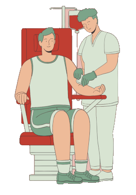

JUNHO VERMELHO - DOAÇÃO DE SANGUE
Histórico e Simbolismo - Data Importante: 14 de junho – Dia Mundial do Doador de Sangue. Criado em homenagem a Karl Landsteiner, descobridor do sistema ABO.
Motivos da Escolha do Vermelho:
- Representa o sangue, a vida e a solidariedade.
Importância da Doação:
- Impacto Social: Uma doação pode ajudar até 4 pessoas. O sangue é essencial em cirurgias, acidentes e tratamentos.
- Componentes utilizados: Hemácias, plaquetas e plasma.
Processo de Doação:
-
Pré-requisitos:
- Estar bem de saúde, ter entre 16 e 69 anos, pesar mais de 50 kg e estar alimentado.
- Levar documento com foto.
-
Etapas:
- Cadastro e triagem clínica.
- Teste de anemia.
- Coleta (5 a 10 minutos).
- Lanche e repouso.
- Impedimentos:
Gripe, febre, cirurgias recentes ou situações de risco para ISTs podem impedir temporariamente a doação.
